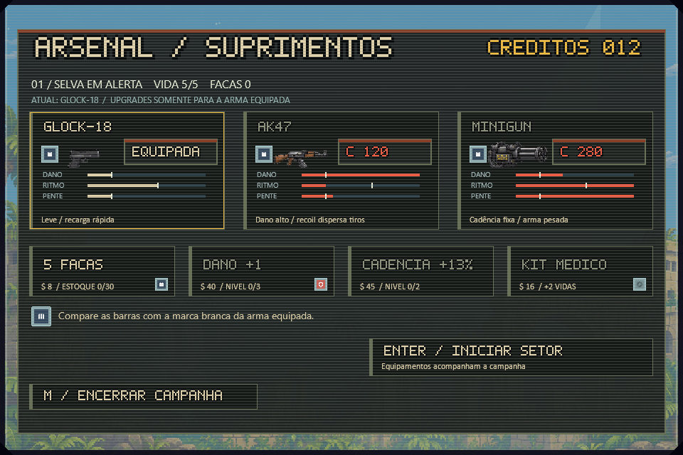
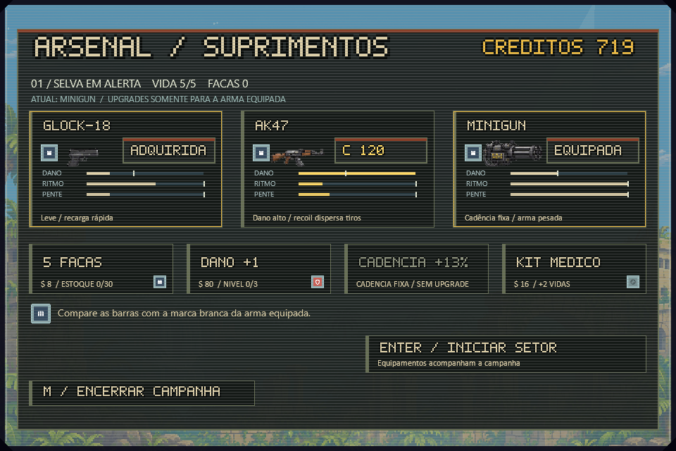
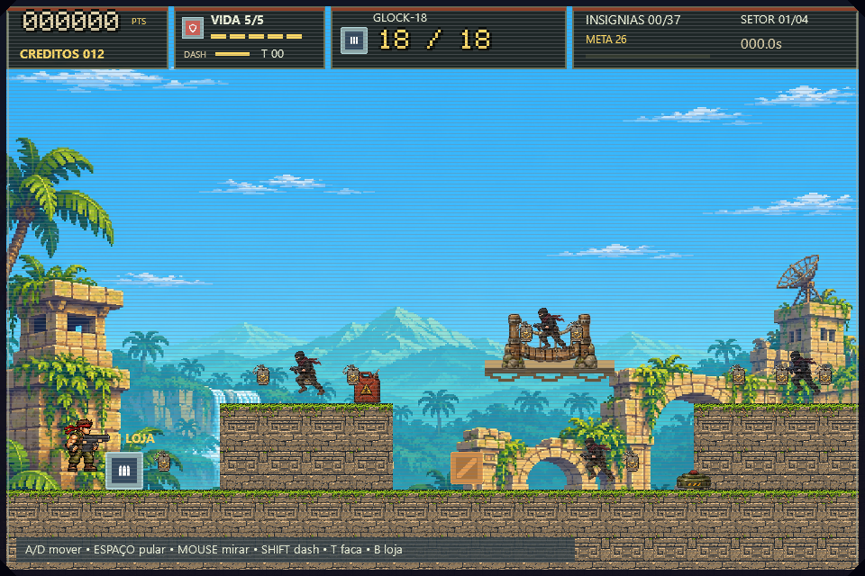
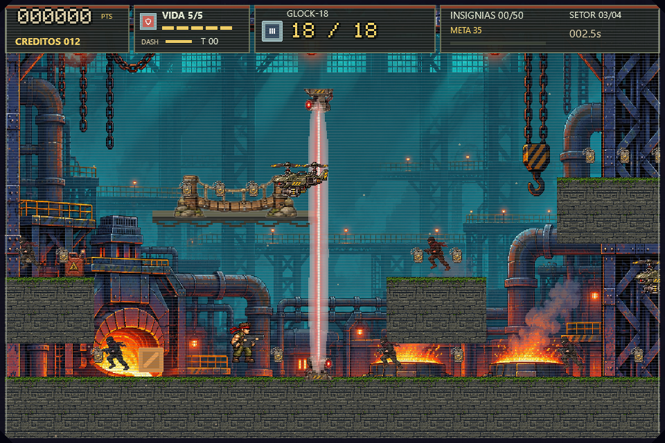
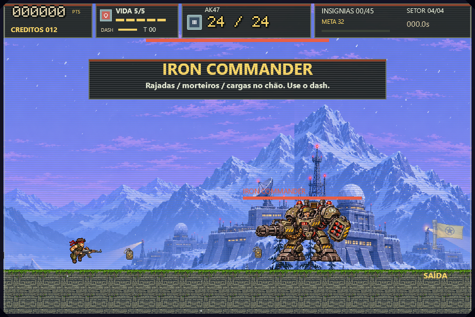
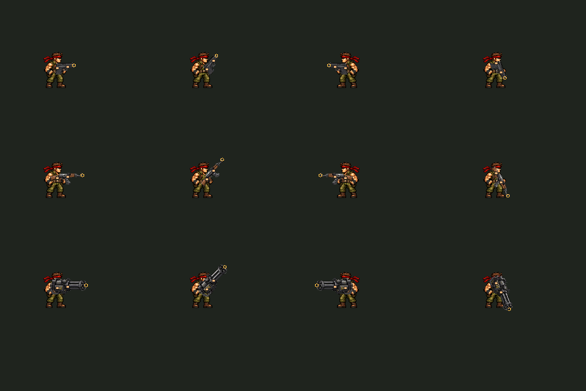
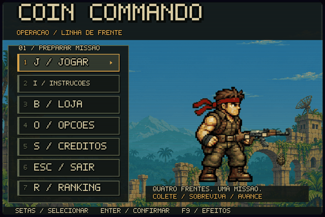
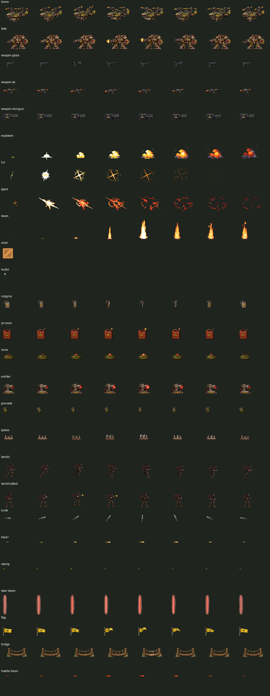

V6 — capturas nativas reais
960×640. Loja Minigun e arena usam estados preparados para QA; não são uma campanha humana concluída. Capturas não tocam ranking.db.
Loja e badges maiores

Minigun: cadência sem upgrade (créditos preparados para QA)

Insígnias, bandidos, galão e mina

Laser conectando as duas bases

Iron Commander, arena livre

Alinhamento das três armas em quatro ângulos

Bomba, explosão e atraso antes da seleção

Frames integrados e carregados pelo jogo

Marcha original, gerada localmente